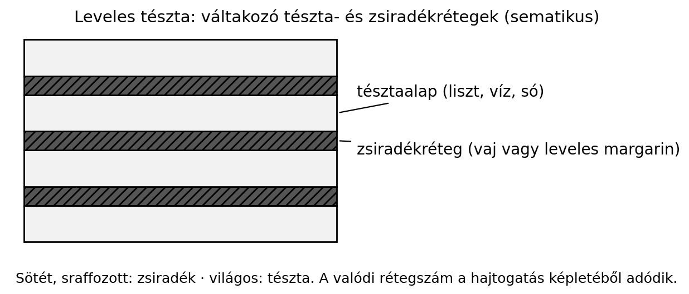
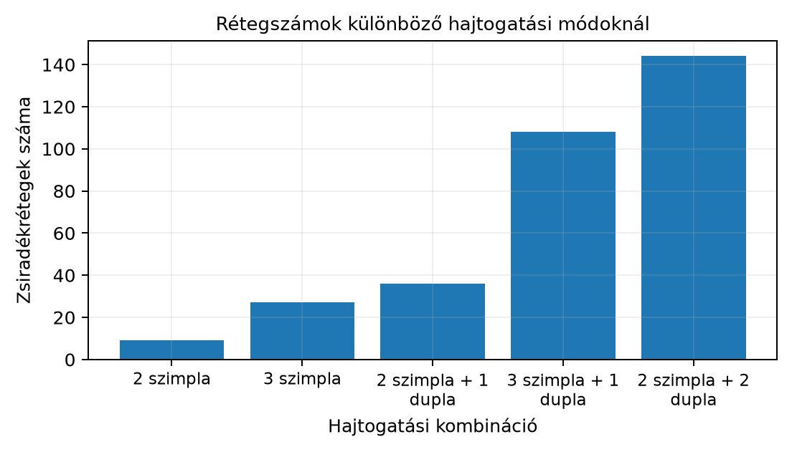

Egy cukrászüzemben a krémesek, a sajtos pálcikák, a kakaóscsigák és a hajtogatott fahéjas csigák minősége azon múlik, hogy a tészta rétegei elválnak-e sütés közben. Ha a zsiradék beledolgozódik a tésztába, a lap nem emelkedik meg, zsíros, tömör, rágós lesz. Ha a vaj túl kemény, a hajtogatáskor kitörik, és a zsiradék nem tudja feszíteni a tésztarétegeket. Ha a tészta túl meleg, a vaj kifolyik a nyújtóasztalra, és a rétegek összeragadnak. Ezért a leveles tészta a cukrászati precizitás mércéje: a hajtogatás során apró, vékony, egymásra rakott rétegeket kell létrehozni, amelyeket később a sütőben a vízgőz szétfeszít. Ennek a technológiának a megértése és a rétegszám kiszámolása az alapja minden leveles tésztából készülő terméknek.
Képzeld el, hogy egy gyurmaréteget és egy vajréteget egymásra fektetsz. Amikor kinyújtod, a kettőt együtt nyújtod el, de a vaj nem elegyedik a tésztával, hanem vékony filmként megmarad a tésztarétegek között. Ha ezt a kettőt egymásra hajtod és újra kinyújtod, a rétegek megsokszorozódnak. Minden hajtogatás után egy vékony tészta–zsiradék–tészta szendvics jön létre. A sütőben a zsiradékból és a tésztából felszabaduló vízgőz nyomást gyakorol a rétegekre; a vajból kisült zsiradék pedig elválasztja a tésztafelületeket, így a rétegek felemelkednek. Hat szimpla hajtogatással a zsiradékrétegek száma már 729, de ez csak akkor működik, ha a zsiradék és a tészta hőmérséklete szorosan illeszkedik, és a hajtogatás közben hűtve pihenteted a tésztát.
Definíció. A leveles tészta (francia: pâte feuilletée, angol: puff pastry) olyan, mechanikailag lazított tészta, amelyben a tésztaalap (víz, liszt, só, gyakran vaj vagy olaj) és egy külön zsiradékréteg (vaj vagy margarin) hajtogatással vékony, levegővel nem érintkező rétegekké alakul. Légpórusokat nem gyúrnak bele, hanem a zsiradék és a tészta váltakozó rétegei között sütés közben keletkező vízgőz feszíti szét a tésztát.
Definíció. Vajas tészta (francia: pâte feuilletée au beurre) az a leveles tészta, amelynek zsiradékrétegét hideg, képlékeny, kb. 80–82% zsírtartalmú vajból (vagy hajtogatásra szánt vajból) készítik; a tisztított, víztelenített vajzsír nem alkalmas, mert víztartalma nélkül nincs gőzlazítás (ellenőrizendő: termékjelölés, gyártói adatlap). Leveles tészta margarinnal (francia: pâte feuilletée margarine) az a leveles tészta, amelynek zsiradékrétege speciális, magas zsírtartalmú, képlékeny margarinból vagy leveles-tészta margarinból áll.
Szabály. A vaj és a leveles margarin közötti különbség a technológiában nem csupán ízbeli. A vaj zsírtartalma Magyarországon jellemzően 80–82% (ellenőrizendő: hatályos vajmegnevezési, zsírtartalmi előírások), míg a leveles margarinok zsírtartalma gyakran 80–84% vagy több, és a gyártók úgy alakítják a zsiradék kikészítését, hogy a margarin hidegen is hajlíthatóbb, nyújthatóbb maradjon. A vaj íze gazdagabb, tejszínes; a margarin viszont stabilabb a hajtogatás hőmérséklettartományában, és olcsóbb (ellenőrizendő: gyártói adatlap, ár).
Szemléltető kép. A következő ábra a rétegek felépítését mutatja, amikor a tésztaalap és a zsiradékréteg váltakozik: a sötét, sraffozott sávok a zsiradékrétegek, a világosak a tésztarétegek.

Összefüggés. A mechanikai lazítás lényege: a zsiradékréteg sütés közben részben felszívódik a tésztafelületeken, de a benne és a tésztában lévő víz elpárolog. A vízgőz térfogata nagyságrenddel nagyobb, mint a vízé; a gőz nyomása a rétegeket feszíti, és a közbezárt zsiradék megakadályozza, hogy a tésztafelületek összetapadjanak. Az eredmény vékony, levegős, hártyás szerkezet.
Jogszabály. Az élelmiszer-higiéniai rendelet (852/2004/EK) szerint a tésztaalapot és a zsiradékot élelmiszerbiztonsági követelményeknek megfelelően kell tárolni és készíteni: a felhasznált zsiradék hőmérséklete és a tészta hűtési lánca dokumentálandó, ha a kritikus pontok (CCP-k) ezt igénylik (ellenőrizendő: hatályos HACCP-adaptáció). A vaj és margarin jelölésére a fogyasztói tájékoztatásról szóló 1169/2011/EU rendelet előírásai vonatkoznak; a zsírtartalom és az allergén (tej) jelölése kötelező, ha releváns.
Megjegyzés. Ebben a fejezetben a „vajas tészta” és a „leveles tészta” elnevezést a hazai cukrászati gyakorlat szerint használjuk: amikor a zsiradékréteg vaj, akkor vajas tésztáról beszélünk; amikor leveles margarinról, akkor szintén leveles tésztáról, de a terméklapon a zsiradék típusát fel kell tüntetni, mert az allergén (tej) és a termék karaktere különbözik.
A leveles tészta két fő részből áll:
Tésztaalap (detrempe): liszt, víz, só, gyakran kis mennyiségű zsiradék (vaj, margarin vagy olaj), néha ecet, citromlé. A folyadék 45–60% a liszt tömegére; a só 1–2%; a bedolgozott zsiradék 5–12% (ezek tájékoztató értékek, ellenőrizendő: konkrét receptúra). A tésztaalapot rövid gyúrással, alacsony vízzel, sima és nyújtható állapotig dolgozzák be, de a sikér hálózatot nem fejlesztik túlzottan, mert a tészta akkor nyújtáskor túl rugalmas, „összeugrik”. A hosszú pihentetés (hűtve) a sikér ellazulását és a víz egyenletes eloszlását szolgálja.
Zsiradékalap (beurrage vagy leveles margarin lap): a hajtogatáshoz használt tömör, kinyújtható vaj- vagy margarinlap. A vajat elő kell lágyítani, de nem felolvasztani: a munkahőmérséklet kb. 12–16 °C, hogy a vaj a tésztával együtt nyújtható maradjon, de ne olvadjon szét (ellenőrizendő: üzemi gyakorlat, gyártói adatlap). A leveles margarin gyakran kissé melegebben, kb. 15–20 °C között nyújtható kényelmesen. Fontos, hogy a zsiradékalap és a tésztaalap állaga (keménysége) hasonló legyen.
Szabály. A tésztaalap és a zsiradékalap állaga (keménysége) legyen hasonló; ehhez a vaj jellemzően kissé melegebb (kb. 12–16 °C), mint a hűtött tésztaalap (kb. 4–8 °C) (tájékoztató; ellenőrizendő: gyártói adatlap, Hajtogatott élesztős tészták). Ha az állag eltér, a vaj vagy margarin reped, vagy beledolgozódik a tésztába, és tömör, egyenetlenül leveles terméket kapunk.
Technológiai hibák a zsiradékalapnál. Ha a vajat túl hidegen (például 10 °C alatt) adjuk a tésztához, a lap kitörik, és a repedésekbe tészta nyomul; a rétegezetlenség a sütésben egyenetlen lesz. Ha túl meleg (22 °C fölött), a vaj kifolyik, a rétegek vajban tocsognak, a tészta sütés közben nem fúvódik fel.
Allergének. A vajat tartalmazó leveles tészta tejet tartalmaz. A leveles margarinok változatosak: lehetnek tejmentesek, de a „margarin” jelölés önmagában nem garancia, ezért az összetevőlistából és a gyártói adatlapról mindig ellenőrizni kell a tej, szója, esetleg diófélék nyomait (keresztszennyeződés). A vaj allergénként a 1169/2011/EU II. melléklete szerint a tejcsoportba tartozik.
A zsiradékot a tésztaalapba háromféleképpen lehet bevinni:
Francia módszer (közvetlen csomagolás). A kinyújtott tésztaalapba a zsiradékot középre tesszük, a tészta széleit ráhajtjuk (borítékhajtás), és ezt a „csomagot” hajtogatjuk. Ez a leggyakoribb a kis és közepes adagoknál.
Angol módszer. A tésztát téglalappá nyújtjuk, a zsiradéklapot a tészta kétharmadára fektetjük, a szabad harmadot ráhajtjuk, majd a másik harmadot is; így a zsiradék egy szimpla hajtással kerül be (tészta–zsiradék–tészta–zsiradék–tészta) (ellenőrizendő: hazai szakkönyv). A Hajtogatott élesztős tészták technológiai lapja is ezt a kétharmados bevitelt használja.
Holland (gyors) módszer. A tésztát és a zsiradékot egyszerre, kockásan egymáshoz keverve dolgozzák össze, de nem gyúrják teljesen, hanem azonnal nyújtják és hajtogatják. Ez gyorsabb, de kevésbé szabályos rétegszerkezetet ad, ezért főleg egyszerűbb termékeknél vagy nagyüzemi előtésztáknál használatos.
Technológiai alap: szimpla és dupla hajtogatás.
Szimpla hajtogatás (single fold, tour simple): a kinyújtott téglalapot harmadába hajtjuk, mint egy üzleti levelet: alsó harmad fel, felső harmad rá. A rétegek száma megháromszorozódik (a zsiradékrétegek szempontjából).
Dupla hajtogatás (double fold, tour double): a kinyújtott téglalapot négy részben hajtogatjuk: a két szélét befelé hajtjuk úgy, hogy középen találkozzanak, majd a tésztát félbe hajtjuk. A rétegek száma 4-szeresére nő.
Mindkét hajtás után a tésztát 90°-kal elforgatjuk, a hajtások számát ujjbenyomással jelöljük, és fóliázva hűtőben pihentetjük. Az alábbi képsor felül- és oldalnézetben mutatja a két hajtást.
Példa. Ha a tésztaalapból egy zsiradékréteget befedtünk, az elején a zsiradékrétegek száma 1. Egy szimpla hajtogatás után a zsiradékrétegek száma (mivel 1 → 3). Egy második szimpla hajtogatás után (3 · 3). Ha helyette dupla hajtogatást alkalmaznánk, az első után lenne. A folyamatos nyújtás és hajtogatás tehát exponenciálisan növeli a rétegszámot.
Szabály. A hajtásszám termékenként eltér: a 3 szimpla hajtogatás ( zsiradékréteg) és a 2 szimpla + 1 dupla () a hajtogatott élesztős tészta (croissant, dán) jellemzője; vajas/leveles tésztánál elterjedt a négy hajtásos rend (két szimpla és két dupla hajtás, zsiradékréteg) vagy a hat szimpla hajtás () (ellenőrizendő: hazai cukrász szakkönyv). A tészta teljes rétegszáma ennél eggyel nagyobb (összetapadó tésztalapokkal), mert a zsiradékrétegek között mindig van tészta.
Számítás. Alapfogalom: a zsiradékrétegek számának kiszámítása a hajtogatások alapján.
A Hajtogatott élesztős tészták alfejezetben levezetett képletet és jelölést használjuk: a szimpla, a dupla hajtogatások száma ( a szorzószám jele, ezért nem használjuk). A befedés utáni kezdő állapot tészta–zsiradék–tészta, vagyis 1 zsiradékréteg, így a zsiradékrétegek száma:
A tésztarétegek száma, ha az egymásra fekvő tésztalapokat külön számoljuk: ; ha az összetapadó szomszédos tésztalapokat egy rétegnek tekintjük: .
Mértékegység. A képletben a rétegek száma dimenzió nélküli; az és egész szám.
Technológiai lap.
Termék neve, termékcsoport, alapmennyiség. Vajas leveles tészta (pâte feuilletée au beurre); mechanikailag lazított, hajtogatott tészta; alapmennyiség: kb. 970 g tésztaalap + 500 g vajlap, összesen 1470 g nyers tészta (a hajtogatás rendje: 2 szimpla + 2 dupla hajtás, 144 zsiradékréteg; a sütési veszteséget lásd a Vajas és leveles tészta feldolgozása és sütése alfejezetben).
Anyaghányad táblázat.
| Nyersanyag | Mennyiség (g) | Megjegyzés |
|---|---|---|
| Tésztaalap (liszt) | 600 | fehér búzaliszt, nem élesztős |
| Tésztaalap (víz) | 300 | hideg, hűtött |
| Tésztaalap (só) | 10 | finom konyhasó |
| Tésztaalap (vaj, olvasztott) | 60 | a tésztaalapba dolgozva |
| Zsiradékréteg (vaj) | 500 | 80-82% zsírtartalmú, hideg |
| Összes tömeg | 1470 | nyers tészta |
Megjegyzés: a vaj zsírtartalma ellenőrizendő; a pontos receptúra a gyártó vagy az üzem szerint változhat.
Eszközök és gépek. Hűtőkamra vagy hűtőszekrény; tésztanyújtó vagy kézi nyújtófa; lisztszóró; hőmérő; vajnyújtó lap vagy sodrófa; éles kés vagy kosárvágó; letakaró fólia.
Műveleti sorrend.
Kritikus pontok (élelmiszerbiztonság) és technológiai kulcspontok.
Allergének a 14 jelölendő csoport szerint.
Minőségi jellemzők (nyers tészta). A hajtogatott tészta felülete sima, nem ragadós, metszetben vékony, egyenletes, el nem olvadt zsiradékcsíkokkal. A zsiradék nem fut ki, a tészta nem repedezik. A nyers tészta hideg tapintású.
Tárolás, eltarthatóság (nyers tészta). Hűtőben 1–2 nap (ellenőrizendő: üzemi belső szabály); mélyhűtőben a fagyasztási gyártói és üzemi előírások szerint, de a kiolvasztás csak hűtőben, és az újrafagyasztás tilos.
Figyelem. A tésztanyújtó gépen a hajtogatási lépéseknél a védőrácsot soha ne iktasd ki, a rést kikapcsolt gépnél állítsd be; benyúlni a mozgó résbe tilos. A kézi nyújtásnál a nyújtófát ne hagyd a tésztában, és a munkafelület ne legyen csúszós.
Biztonsági korlát. A gépi művelet tanműhelyi vagy üzemi környezetben, oktatás után és felügyelet mellett végezhető; otthon háztartási géppel, kis adagban gyakorolj.
Tilos. A kiolvadt leveles tésztát újrafagyasztani. A lejárt vagy romlott vajat/margarint „megmenteni”. A hajtogatás közben a tésztát meleg felületen hagyni, míg a zsiradék kifolyik.
Számítás – 1. példa. Egy üzem francia módszerrel készít hajtogatott tésztát (például croissant-hoz). A tésztaalapba egy vajlapot tesznek, majd három szimpla hajtogatást végeznek. Hány zsiradékréteg alakul ki?
Ellenőrzés. A 27 zsiradékréteg a hajtogatott élesztős tészta jellemző értéke; a vajas, leveles tészta (például krémeslap, vol-au-vent) ennél több hajtást kap. Ha a sütési viselkedés nem megfelelő, érdemes a hőmérsékletet és a hajtogatási vastagságot ellenőrizni, nem csupán a rétegszámot.
Számítás – 2. példa. A vajas tészta technológiai lapja két szimpla és két dupla hajtogatást ír elő. Mennyi lesz a zsiradékrétegek száma?
Megjegyzés. A több réteg nem mindig jobb. A dupla hajtogatás vékonyabb, tömörebb rétegszerkezetet adhat; a túl sok réteg sütéskor egymásra tapadhat, ha a zsiradék túl kevés vagy a nyújtás túl vékony. A megfelelő rétegszám a terméktől függ: croissant-nál 27, vajas leveles tésztánál ennél több (ellenőrizendő: konkrét receptúrák, hazai szakkönyv).
Rétegszámok összehasonlítása. Az alábbi ábra a képletből számolt zsiradékrétegszámokat mutatja különböző hajtogatási rendeknél; a HTML-kiadásban a hajtásszám kalkulátorral kipróbálható (lásd a Hajtogatott élesztős tészták ábráját).

A hajtogatott tészta nyers állapotban az alábbi módon ellenőrizhető:
Hibák nyers tésztánál:
Egy cukrászüzemben a hűtőkamra hőmérséklete egy nyári napon időszakosan 10 °C-ra emelkedett, mert a kamrát gyakran nyitották. A pék a leveles tésztát hajtogatás közben hűtőpihentetés nélkül, egymás után háromszor hajtogatta. A vaj megolvadt, a tésztába beledolgozódott, az első sütési próbánál a tészta nem emelkedett, hanem zsíros, rágós lap lett. A minőségi kifogás miatt a tételt selejtezni kellett. A javítás: a hűtőkamra hőmérsékletét 0–5 °C-ra állították, a munkafolyamatba kötelezően beiktatták a 20–30 perces hűtőpihentetést, és a dolgozókat ismételten oktatták a leveles tészta technológiájára. A hűtő hőmérsékletét a HACCP-dokumentációban folyamatosan rögzíteni kellett (ellenőrizendő: üzemi HACCP-előírás).
Ez az eset jól mutatja, hogy a „gyorsítás” a leveles tészta esetében nem a termék gyorsabb elkészítését, hanem a termék tönkremenetelét jelenti.
1. feladat (A). Sorold fel a vajas tészta és a leveles margarinos tészta közötti három lényeges különbséget.
2. feladat (A). Mi a francia, az angol és a holland csomagolás lényege? Egy-egy mondatban jellemezd őket.
3. feladat (B). Egy leveles tészta készítésekor a tésztaalapba 1 vajlapot tesznek. Az üzem négy szimpla hajtogatást tervez. Számold ki a zsiradékrétegek számát. Ellenőrizd, hogy a 27 réteges (croissant-) értékhez képest ez mennyivel több réteg.
4. feladat (B). Egy receptúra szerint a hajtogatás: 2 szimpla + 2 dupla. Hány zsiradékréteg lesz? Hasonlítsd össze az előző feladat eredményével, és mondd meg, melyik adna valószínűleg vékonyabb, levegősebb rétegszerkezetet (feltételezve, hogy a nyújtási vastagság azonos).
5. feladat (C). Egy pék a leveles tésztát készítve észreveszi, hogy az első hajtogatás után a vaj kifolyt a tészta szélein. Milyen lehet a hiba oka? Mit kell tennie ahhoz, hogy mentse a tésztát, ha lehetséges? Helyesbítő tevékenységként indokold a hűtést és az újraformázást.
6. feladat (D). Készíts el otthon egy kis adag vajas leveles tésztát a gyakorlati útmutató alapján (pl. 300 g liszt, 150 g víz, 5 g só, 30 g vaj a tésztába, 250 g vaj a rétegekhez). Végezz 3 szimpla hajtogatást, minden hajtogatás között 20 perces hűtőpihentetéssel. Nyújtsd ki 0,5 cm vastagra, süsd meg 200 °C körül (ellenőrizendő: sütő hőfok) 15–20 perc alatt. Tölts ki egy technológiai lapot, és értékeld a sült tészta rétegszerkezetét.
Önellenőrzés – válaszok
1. feladat (A) megoldás. A vajas tészta zsiradéka vaj, íze tejszínesebb, de a vaj hőmérséklet-érzékenyebb; tejallergént tartalmaz. A leveles margarinos tészta zsiradéka speciális leveles margarin, gyakran hidegen jobban nyújtható, olcsóbb lehet, és összetételétől függően tejmentes is lehet (ellenőrizendő: gyártói adatlap). A vaj zsírtartalma jellemzően 80–82%, a leveles margariné gyakran 80–84% (ellenőrizendő: termékjelölés).
2. feladat (A) megoldás. Francia: a zsiradékot a kinyújtott tészta közepére tesszük, a széleit ráhajtjuk, mint egy borítékot. Angol: a zsiradéklapot a tészta kétharmadára fektetjük, és a szabad harmadokat ráhajtjuk. Holland: a tésztát és a zsiradékot kockásan összekeverve, azonnal nyújtva és hajtogatva dolgozzuk be.
3. feladat (B) megoldás. , . zsiradékréteg. A 27 réteghez képest többletréteg. Azonos nyújtási vastagságnál a rétegek vékonyabbak, ezért a hajtások között gondosan hűteni kell, hogy ne tapadjanak össze (az optimális hajtásszám terméktől függ; ellenőrizendő: hazai szakkönyv).
4. feladat (B) megoldás. , . zsiradékréteg. Ez több, mint az előző 81; azonos nyújtási vastagságnál a rétegek vékonyabbak, de a hajtások közti pihentetéssel és a megfelelő hőmérséklettel szabályos emelkedés érhető el. A hajtásszám termékenként eltér: hajtogatott élesztős tésztánál 3 szimpla (27), vajas leveles tésztánál elterjedt a 2 szimpla + 2 dupla (144) vagy a 6 szimpla (729) rend (ellenőrizendő: hazai cukrász szakkönyv).
5. feladat (C) megoldás. A vaj kifolyásának leggyakoribb oka a túl meleg vaj vagy a túl meleg környezet. A pék tegye a tésztát azonnal hűtőbe 20–30 percre, hogy a vaj visszadermedjen. A kifolyt vajat nem kell beledolgozni; a tésztát óvatosan újraformázhatja, de a rétegszerkezet már sérült, így a végtermék minősége nem garantálható. A helyesbítő tevékenység: a hajtogatási műveletet leállítani, a tésztát hűteni, a vajat nem belenyomkodni, és a következő tételeknél a vaj hőmérsékletét 14–18 °C-ra ellenőrizni.
6. feladat (D) gyakorlati útmutató értékelése. Az elkészült leveles tésztának aranybarnának, rétegesnek, ropogósnak kell lennie. A metszeten vékony, hártyás lemezeket kell látni. A technológiai lapon rögzítsd a hűtési időket, a nyújtási vastagságot, a sütési hőfokot, a tömegveszteséget. Az értékelési szempontok: a sütési magasság, a rétegszerkezet, a felület színe, az íz, a zsiradék szivárgásának hiánya.
A vajas leveles tészta és a leveles margarinos tészta mechanikai lazítással készül: a tésztaalapba egy zsiradékréteget csomagolunk (francia, angol vagy holland módon), majd szimpla vagy dupla hajtogatással vékony tészta–zsiradék–tészta rétegeket alakítunk ki. A vaj hőmérséklete kb. 12–16 °C, a tésztaalapé kb. 4–8 °C, az állaguk legyen hasonló; hűtőpihentetéssel (20–30 perc, ellenőrizendő) akadályozzuk meg, hogy a vaj kifolyjon vagy a sikér túl rugalmas legyen. A hajtogatások számából a zsiradékrétegek száma képlettel számítható; a 3 szimpla hajtogatás 27, a 2 szimpla + 2 dupla hajtogatás 144 zsiradékréteget ad. Sütéskor a zsiradékrétegek között keletkező vízgőz feszíti szét a lemezeket; ettől lesz könnyű, hártyás, ropogós a leveles tészta. Továbbvitt eredmény: ezt a nyers hajtogatott tésztát használjuk a Vajas és leveles tészta feldolgozása és sütése alfejezetben krémesek, uzsonnasütemények és sós teasütemények készítéséhez.